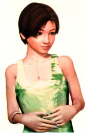

Female-Bobs arrive at Dusk
"And why this patch? I was dissatisfied with the various bimboish female-Bob patches, as being inappropriately dressed, and I wanted to create a patch of that type that was non-bimboish and in the style of the original Bobs."
-Loren Petrich, (1996)from the Read-me, Sex-changer file for his Tina-bob patch for the Marathon Infinity game engine.
In the latter half of the 1990’s, before 3-D shooter and adventure computer games evolved to include female characters, game fans and hackers grafted female game heroines into what were once almost exclusively male populated game worlds. It is quite possible that these early fan created female heroine "patches" patterned the genotype for later heroines in commercial games. In 1996, Eidos Interactive's lucrative release of Tomb Raider with action heroine "Lara Croft" was followed by a stream of commercial 3D shooters with at least the option of playing active female avatars. PC and console games like Resident Evil (1997), Vigilance (1998), O.D.T. (1998 ) and Dark Vengeance (1998), allow the player to choose female characters from a cast of genders and ethnicity’s, (similar to the array of character profiles available in console fighting games like Mortal Combat). Sega’s 1998 release of the space shooter Enemy Zero features a solo action heroine with familiar first name, "Laura Lewis".
Yet this millennial infusion of female polygonal heroines into the shoot-em up computer game world was not accompanied by a parallel influx of human female players. (Other genres of computer games follow different gender make-ups, for instance, online role playing games have historically been more popular with women in comparison to shooter games.) With the notable exception of recent formations of female Quake clans like Vicious Vixens and Clan PMS, the 3-D shooter world is still largely inhabited by human males who control virtual male and/or female avatars. The pairing of human men/boys with virtual women avatars, a configuration that one may speculate is sometimes one of the few relationships that these teenage and twenty something computer gamers have to "women", generates some interesting puzzles.
Why have some of these guys traded in their soldiers for macho girl dolls? Do they identify with the heroines as players in drag? Are these virtual women dangerously idealized porno dolls or substitute girlfriends for geeks? What are we to make of "Croftage", the term I overheard one gamer, standing nearby at a Los Angeles outlet of Fry’s Electronics, use to describe the massive celebrity worship of Tomb Raider heroine, Lara Croft, who will star in a major motion picture produced by Paramount? And how to approach these male constructed female avatars as a female player?
Let's return to Loren Petrich’s Tina-bob Patch cited at the beginning of this text. In online gamer fan culture the practice of creating game add-ons, patches, hacks, skins, levels, mods, and all manner of game modifications allows for game "fans" to actively participate in the cultural production of gaming. Game patching goes beyond Henry Jenkins description of the "de Certeauian" processes of "nomadic textual poaching" practiced by avid television fans to material reconstruction and hacking of game worlds and avatars. Avid gamers design their own levels, mods (for Quake) and wads (for Doom), including remaking architecture, characters, (character "skins" and 3-D models), sounds and game play. If game hackers get their hands on the original source code from a game engine they often create editors for altering games which they share with other gamers, distributing them freely on the web. Since each custom fan-created game editor is unique to each game there is a diverse, piece-meal, ingenious, and buggy variety of software available for editing games. As a kind of open source laboratory for gaming, online patch distribution is a forum for proposing new and alternative character types and player subject positions, occasioning mutations at the borders of "official" game genres.
Loren’s Tina-bob Patch replaces 1st person shooter Marathon Infinity's male "Bob" protagonist with a "non-bimbo" Tina. The patch's read-me file describes Loren's feminist rational for his creation Tina’s (was almost named Mary) discreet body proportions and unisex attire. Tina-bob was fabricated as an alternative to patches like J. Coffey’s Amazons and Female Robertas Infinity patch. Amazons and Female Robertas populates the game world with topless double-D Amazons and florescent bikini poster girls (the Robertas). In a cultural domain where comic book extremes, excess and monstrosity, are rampant, unostentatiously efficient Tina-bob in her military green full body uniform arrives to save the day, refusing to participate in a spectacle of radical otherness, or to submit to adolescent male fantasies of female sexiness. She is truly a female version of "Bob", the unsupposing everyman male protagonist of the Marathon Series whose nondescript character is intended to allow the player to slip seamlessly into his skin. (Although, as the existence of this and other female bob patches suggest, a male bob skin is not necessarily what male gamers feel like wearing every day.)
Picture 1. Tina-bob vs. Betty-bob
As game engine graphics, hardware processing power, and 3-D accelerator cards improve, allowing for increased visual detail and special effects like fog and lighting, game genres experience content and game play "evolutionary" transformations as well. Skipping forward on a highly accelerated shooter genre timeline to the year 2000, neither the androgynous Tina-bob, the bare breasted Amazon, nor the sleazy poster girl, have emerged as the female genotype de jour in the online Quake Arenas. Or perhaps it is more accurate to say the Frag Queens of network shooters like Quake and Unreal mix and match female character lexical genes from all of these heroines into a new kind of a Tina-bob monster, splicing pumped up musculature onto large breasts and androgynous combat wear.
2. Nude Raider vs. Tomb Raider Fan Wars
A similar debate concerning female avatars is inscribed in the topology of online Tomb Raider fan culture. Finally provided with prepackaged female heroine in the form of action adventure heroine Lara Croft, male gamers contested what sorts of female avatar representation were appropriate in 3-D adventure gaming, and in the encompassing online fan culture. Many Tomb Raider fans belong to the Nude Raider web ring. A ring is a collection of personal web sites that share a common theme and link to one another in a circular hyperlink pattern. The Nude Raider patch, an extremely popular game patch internationally cerca 1997, hacked the Tomb Raider engine and replaced Lara Croft’s shorts and halter top with nude textures (while retaining her ammunition belt). Nude Raider fan sites such as Naturally Lara often displayed screen shots of Lara in naked game play action. Some of these sites even featured "fake" nude Lara’s with smoother air-brushed polygons than the real Nude Raider patch allowed for. In response to the pornographization of their beloved Lara, more upstanding Tomb Raider fans, including many fans in the Tomb Raider Ring, began to post "Nude Raider free" banners on their sites. These fans affected a more romantic stance towards Lara, regarding Nude Raider as direspectful towards their beloved English lady. (Although I don’t think they objected to her comic book heroine figure judging by the choice of Lara pictures on their sites).
Picture 2. A Lara Croft fan site with a "Nude Raider Free" banner displayed in the bottom left frame.
Fan web sites such as The Croft Times elevated Lara to celebrity status, spinning elaborate tales of Lara’s personal and extra-cirricular (outside the game) life. Fan fiction distributed through zines and club publications is common among fans of television series like Star Trek and Beauty and the Beast. According to Henry Jenkins, this particular television fan culture is comprised mostly of women, and he reads the stereotype of brainwashed obsessive fans as a reification of mainstream culture's misogynist values. On the other hand, but not too surprising considering the gender composition of the majority of gamers, computer game fan fiction is usually "penned" by male writers. Writers such as Michael L. Emery, author of The Flowers of God, and Marc Farrimond, author of Wedding Bells, post their romanitc Lara Croft stories on the Croft Times and other fan fiction sites.
Lara Croft’s hyperreal virtual girlfriend role is encouraged by Eidos Interactive’s clever introduction to the game. The player uses Lara’s personal mansion as a training course for subsequent game play and can also enter into any of her private rooms, including bedroom, bathroom, and a cavernous oversized kitchen. After completing the training course with Lara’s watchful pleasantly upper crust British voice as guidance, the player feels as if he has personally made her acquaintance (and he can return to visit her home anytime he wants to). By allowing the player access to Lara's domestic sphere, in addition to "accompanying her" on her adventures to Egyptian tombs and exotic cities, the player is granted special privileges normally reserved for family, friends and boyfriends.
Lara Croft's most obvious virtual female competitor in the East was Japanese pop star Kyoko Date. Kyoko's popularity has waned dramatically and unfortunately her existence has almost been entirely erased from the web, leaving a trail of dead links in her wake. Created in 1996, Kyoko is a 3-D female character who released pop songs, music videos, and generated extra income as spokeswoman for San Francisco new media company Oz Interactive. With a short boyish haircut, slender and girlish in comparison to Lara Croft, Kyoko had her own following of fan fiction and pornographic tales which borrowed from anime and manga conventions in Japan. Sometimes as "innocent" as a Sailor Moon high school romance, Kyoko's fan fiction occasionally dipped into erotica. Kyoko fan Dire Wolf describes how, "on the Internet, teenage boys from Italy, Hong Kong, Malaysia, and around the world were flooding Kyoko Date bulletin boards with postings and scouring the web for graphics of her beauty."

Picture 3. Kyoko Date, Virtual Singer of Japanese hit pop song Love Connection
But Kyoko Date is not the last of her breed. Creating 3-D girls and posting web sites for them has become something of a hobby for Japanese 3-D modelers or "Character Generator" artists. The site www.fushimi.com/angels/ contains links to many 3-D girl sites, (and just a few 3-D space dogs and other 3-D characters). Like Kyoko Date, (and unlike Lara Croft or even unlike the cartoon style of Japanime characters), these girls are extremely hyperreal, from their bone structure to the pore texture of their "skin." Some CG artists even place small imperfections like moles and flushed mottled skin on their character’s faces, giving characters like "Ryoko" a perversely human uniqueness. While these minutely detailed, multiple eye-lashed, million polygoned 3-D characters are quite stunning, it is important to note that computer game engines are not yet capable of processing live in game action at this level of detail. (It may take hours just to render one still frame of such a high resolution character.) Nevertheless, they strike a formidable presence on their web sites-- singing pop songs, offering horoscope advice, and exuding timeless frozen girlish youth to the nth degree.
Picture 4. Ryoko by Yamag’s Garage. Ryoko has three small moles on her face.
Both the portrait of the lonely male computer gamer longing for a romanticized virtual girlfriend and the image of the horny gamer hunched behind his keyboard searching for an objectified virtual porn star rely on the heterosexist assumption that boys would naturally represent themselves virtually as boys unless some stunted desire for women, (girlfriends or sexy babes), compelled them to create female avatars. A conceivable alternate scenario unfolds for at least some male gamers if we consider that unlike the trophy princess who awaits rescue at the end of "Prince of Persia" or the blond "bimbos" in Sim-Copter, female action heroines are active avatars in the game space that are "worn" by the player. Some male players are attracted to the idea of anonymously donning a feminine skin without the social repercussions which often attend such a gesture in "real life". Like early text based Mud's or more recent graphical Role Playing Games where male players often assume female identities, (and female players assume male identities), playing a female character allows male players to escape the parameters of the male game hero role and his "real life" maleness. Here the avatar could be perceived as a layer of feminine drag masking the gamer’s male core identity. Or, following the identity theory of Sandy Stone, the female game character identity is simply one of many equally "real" subjectivities lived out by the player in virtual and non virtual life, (to live is to role play). The latter view describes the subject as a polymorphous collection of multi-gendered identies who lack a unifying core identity.
Julian Dibbell’s ethnographic journeys into the textual MOO, LamdaMOO, led him to the discovery that even self professed heterosexual men often played female characters and engaged in "TinySex" with other male and female characters of indeterminate RL, (Real Life), gender. He describes the "gauzy" sensation of wearing a feminine skin as "enchanting", even though he had never been particularly interested in cross-dressing in the past. Dibbell makes a persuasive argument for understanding the allure of online cross gender experimentations as an attraction to fantasy role play itself, or as a "taste for [...] thoroughgoing entanglement." Experienced male MOOers construct convincing female "morphs" with meticulous craft, avoiding the hollowness of "FabulousHotBabes" characters by refraining from textual description of obvious physical features and by adding punky "feminist" or "cross gender" signifiers such as gothic tattoos and combat boots. Similarly, just as the sharply articulated muscular contours of the real life drag queen accent her beauty, in the 3-D game world, prosthetic vestiges of the macho soldier, Lara Croft’s gun holster and oozy, Jill Valentine’s combat boots and baret and Amy Leong’s rocket launcher, thrust the gender identity of the heroine into delectable confusion, a collage of drag upon drag, a jumble of gender signifiers.
4. Double Drag
As a woman playing a computer game heroine who is a already a digital drag queen I can best describe the experience as a kind of drag twice removed, or drag squared. As is sometimes the case for women who participate in various sectors of technoculture, as I enter into the masculine discourse domain of computer gaming culture I go butch, taking stock of my arsenal of weaponry and combat gear. Yet as I maneuver what is clearly a womanly form through the passageways and recesses of the game I am distinctly aware of my hyperbolic feminine identity. (Is there some appreciation for my view of my avatar’s figure at this moment that I share with the Nude Raider ring or television's Warrior Princess Xena’s lesbian fan club?) My pleasure in swift and deadly annihilation of the enemy and gory blasts of pixilated blood provides an immediate, gut-level satisfaction that cuts through the layers of drag, collapsing the female drag queen identity of the avatar back onto my own. Thus the double drag can be reversed on itself, allowing women to relish in gratuitous computer game violence while playing female avatars.
At each layer of drag I am distinctly aware of a forced identity, of a feminine role on top of a masculine role, both floating above my own customary female identity. This is not say that my "customary female identity" is more original, natural, or unified, being itself a kaleidoscope of feminine, masculine, student, hetero girlfriend, bi flirt, student, teacher, artist, writer, coder, gamer, American citizen, immigrant daughter and other roles and identities, a worn and continually morphing suit I have become accustomed to wearing. And neither is "drag" simply the donning of a gender which happens to be opposite of one’s biological sex. Drag is an intentionally aware gesture–an ultra-exaggerated "performative" gender act, performative as all gender acts are but distinguished from Judith Butler’s drag inspired queer theory formulation of "performative gender" by awareness and dramatic excess. Girls can be drag queens too. Drag is self-conscious gender play. It is deliberate toying and stretching of gender roles to their dramatic limits. Drag is a gender graft that is hyperbolic and extreme like the male Quake hero’s bulging muscles or Lara Croft’s large pointy breasts, like the drag queen’s outrageously perky breasts or the butch lesbian’s motorcycle boots. Drag is Hollywood’s local celebrity "Angeline" and other monstrous plastic-faced, silicone-breasted, perfectly feminine freaks who cruise the streets of L.A. (who started out biologically female).
Picture 5. Angelyne from her virtual tour on angelyne.com. This photograph of Angelyne’s face was displayed on a large billboard in Hollywood.
And this deliberate gender masquerade is what I refer to when I say that the feminine and masculine collapses onto "my own" when I lift my oozy and blast my opponent to nothingness. I am no longer in drag, in a self-aware idealized gender mask, (or double drag mask on mask). I even loose consciousness for a moment of any subjectivity I might be--I am pure bliss and gloating victory. Then all the layers melt together into another new subjectivity--a new gender configuration for me to inhabit temporarily and add to my collection--I am a polygon skinned large breasted phallic oozy toting keyboard pumping bad ass bitch queen. Thus as I play my female game avatar in a double drag dress, anti-subjectifying libido blasts interrupt my performance, adrenaline inspired identification leakage that, (along with repetition and Lacanian processes of mirror image identification with my avatar), assist the play act in penetrating below the surface. The drag performance morphs into a new role, a new subjectivity, a new gender configuration that incorporates the excessive and contradictory gender signifyers into itself.
The efforts of male gamers like Loren Petrich and cohorts in shaping the Tina-bobs of the future are appreciated. Through their participation in an unofficial dialogue waged over the Internet they developed alpha and beta female heroine genotypes. Trading in their male solders for female fighters, they constructed ultra fem drag queens, level headed female soldiers, and sexy doll automatons. When the first commercial games were released with glossy female heroines, these fans further articulated various subject positions in relation to their female avatars, and constructed an online fan culture encompassing these heroines. Male gamers and CG artists have initiated the process of female avatar representation and character construction but there is still an urgent need for more women to take an interest in entering the virtual world of computer gaming, both as players, active game hackers/fans, and game developers, perhaps first as double drag queens. With a human female infusion, new gender configurations would arise that would strike new patterns in a world currently populated by human men with virtual men and virtual women.
Anne-Marie Schleiner
copyright 1999
End Notes:
1. http://www.webcom.com/petrich/games/marathon/downloads.html#FemBob/[last access: 05/26/2000]
2. Websters online defines "genotype" as: 1.The genetic constitution
of an organism or a group of organisms. 2.A group or class of organisms having
the same genetic constitution.
3. "PC "refers to games that are played on personal computers and
"console" refers to games played on closed hardwired platforms like
Sega and Playstation.
4. http://www.clanpms.com/[last access: 05/26/2000]
http://www.DaValkyries.com /[last access: 01/26/2000]
5. Schleiner, Anne-Marie (Forthcoming): Parasitic Interventions: Game Plug-ins
and Patches as Hacker Art. In: Mariosophy: The Culture of Electronic Games,
Ed. Erkki Hutahmo.
6. Jenkins, Henry(1992): "Get A Life!": Fans, Poachers, Nomads. In:
Textual Poachers: Television Fans and Participatory Culture, New York/London,
24-27.
7. http://www.marathon.org/hyperarchive/[last access: 01/26/2000]
8. Schleiner, Anne-Marie Axis Reader on Gender, 2000. This article is an exploration
of Quake and other shooter female avatars, referencing queer theory articulations
of monstrous gender construction by the likes of Judith Butler and Judith Halberstam.
9. http://rville.ctimes.net/[last access: [05/20/2000]
10. http://www.ctimes.net/fancorner/fanfic/index.html [last access: 05/26/2000]
11. Jenkins 1992: 19.
12. http://www.ctimes.net/fancorner/fanfic/index.html[last access: 05/26/2000]
Game fan fiction is also very common in the role playing game genre, where players
publish extensive histories of the fantastic exploits of their guild or clan
on their own guild or clan dedicated sites.
13. http://www.wdirewolff.com/jkyoko.htm[05/20/2000]
14. http://members.tripod.co.jp/RYOKO_3D/index1.html
15. Sandy Stone, The War of Desire and Technology at the Close of the Mechanical
Age , Cambridge: MIT Press, 1995.
16. Dibbell, Julian (1998) Samantha, Among Others. In My Tiny Life: Crime and
Passion in a Virtual World, New York, 127.
17. Dibbell 1998: 134.
18. Judith Butler, Gender Trouble: Feminism and the Subversion of Identity,
Routledge Press, London/New York, 1990, p. 175.
19. Angelyne is famous in Los Angeles for being an unfamous celebrity. She is
an ultra feminine silicone bodied "celebrity" who has never acted.
She pays for her own billboard posters promoting herself and rides around Los
Angeles waving at people from a pink corvette convertible.
20. See my article "Does Lara Croft wear fake polygons?" Leonardo,
v.3, 2001 for a description of Lacanion processes of identification with game
avatars.